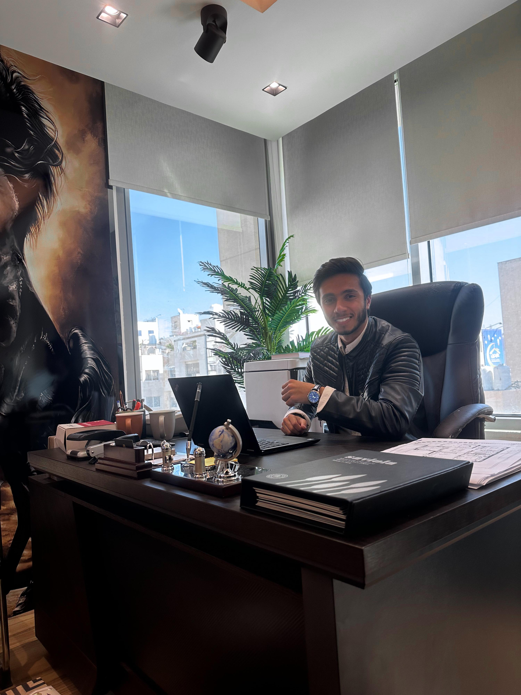

AI/ML Engineer focused on building real-world machine learning systems and intelligent applications.
I am a graduate of Al-Balqa Applied University, where I earned a Bachelor’s degree in Electrical Power Engineering. I am an active member of the Jordan Engineers Association, IEEE, and the Electrical Engineers Youth and Media Committee. My academic background and technical expertise span electrical power systems and AI-driven solutions, with a strong focus on integrating traditional engineering principles with modern artificial intelligence technologies to develop efficient and innovative systems.
Currently, I work as an Electrical Engineer and Manager at Roya Design Company, where I oversee multiple projects across Jordan and lead engineering teams to ensure the successful delivery of high-quality results. In parallel, through the AI.SPIRE program, I am advancing my applied AI skills in machine learning pipelines, natural language processing systems, and production-level data infrastructure, with a focus on bridging physical engineering systems with intelligent software solutions.
Added project environment setup for reproducibility and collaboration. This includes a requirements.txt with core dependencies (pandas, matplotlib), an updated .gitignore to exclude the virtual environment, and an initial project README description. The local virtual environment was configured and verified successfully using test_environment.py, which runs without errors and outputs “Environment OK”.
View RepoImplemented a complete team-ready project setup including README, .gitignore, setup.sh, AGENTS.md, and CHANGELOG.md. The environment is fully reproducible and tested locally, allowing new contributors to set up and run the project in under two minutes with no issues.
View RepoBuilt a modular end-to-end data pipeline in Python for retail sales analysis, including data loading, cleaning, feature engineering, summary statistics, and automated visualization generation. The pipeline handles real-world messy data, ensures reproducibility, and is validated through pytest unit tests to guarantee correctness across each processing stage.
View RepoBuilt a PyTorch-based neural network pipeline for predicting housing prices using a structured regression model. The implementation includes data loading, feature standardization, tensor conversion, a fully connected neural network (5 → 32 → 1), and a full training loop over 100 epochs with loss tracking and optimization using Adam and MSE loss. The model is trained end-to-end and generates predictions saved to CSV for evaluation.
View RepoBuilt a full SQL analytics pack for Levant Tech Solutions, including complex multi-table queries using JOINs, GROUP BY, CTEs, and window functions to analyze employees, departments, projects, and staffing patterns. The work also includes a KPI brief with business-focused metrics and a custom schema extension for employee certifications with full DDL, sample data, and relational queries across the expanded database structure.
View Reponalyzed and optimized a PostgreSQL “SQL Murder Mystery” workload using EXPLAIN ANALYZE to evaluate query execution plans, identify sequential scans, and improve performance through strategic index creation. The work includes before-and-after benchmarking of query performance, implementation of indexing strategies, and a written analysis discussing trade-offs between read and write efficiency, as well as recommendations for production-grade database optimization.
View RepoBuilt an end-to-end ETL pipeline in Python that extracts data from a PostgreSQL database, transforms and cleans it using Pandas (including joins, filtering, and customer-level aggregations), validates data quality through automated checks, and loads the final dataset into both a PostgreSQL table and a CSV file. The pipeline ensures reproducible, production-style data processing with clear validation rules and structured output for analytics.
View RepoProduced advanced SQL-based time-series and cohort analytics using window functions (LAG, LEAD, ROWS BETWEEN, and ROW_NUMBER) to analyze revenue trends, customer retention, and category performance over a 12-month period. The work includes cohort-based behavioral segmentation, period-over-period growth calculations, and moving average trend analysis, translated into a business-facing executive report with actionable insights and data-driven recommendations for strategic decision-making.
View RepoConducted a full exploratory data analysis (EDA) on student performance data from Hashemite Technical University, including data cleaning, distribution analysis, correlation analysis, and statistical hypothesis testing. The analysis identifies key relationships between study behavior, attendance, internships, and GPA, supported by visualizations and statistical tests (t-tests and chi-square), and summarizes actionable insights and recommendations in a structured findings report backed by statistical evidence.
View RepoBuilt a full KPI analytics framework and executive reporting dashboard for the Amman Digital Market using PostgreSQL and Python. The project includes data extraction from a relational database, definition of business-focused KPIs across revenue, customer, and product dimensions, and statistical validation using hypothesis testing to confirm key business patterns. It also generates publication-quality visualizations and a concise executive summary translating analytical results into actionable business recommendations.
View RepoCreated a publication-quality KPI visualization highlighting a key business insight from the Amman Digital Market dataset, supported by a reproducible Python script and clean data storytelling. The project includes a refined chart designed to communicate a single actionable finding clearly, along with a concise written analysis explaining the KPI selection, visualization choice, and its business implications. It also incorporates a comparative analysis with a peer to evaluate differing KPI priorities and interpretative perspectives on the same dataset.
View RepoTelecom Churn ML Pipeline Developed classification and regression models using scikit-learn Pipelines with cross-validation and regularization (Logistic, Ridge, Lasso), focusing on model evaluation and imbalanced data handling.
View RepoRegularization Path Visualization Tool Built a tool to visualize coefficient changes in Logistic Regression under L1 and L2 regularization, demonstrating feature selection behavior and model stability across different regularization strengths.
View RepoGitHub: Profile
LinkedIn: Profile